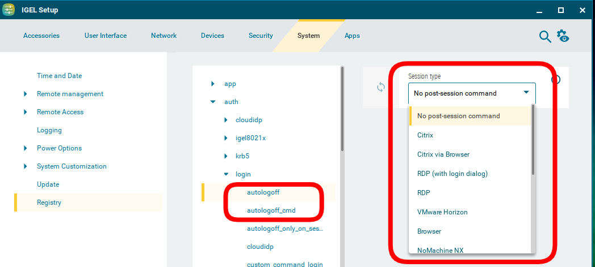

HOWTO COSMOS
IGEL KB - How to Start with IGEL COSMOS
NOTE: Minimum viable product
FAQ - IGEL Education
Q: What are the training options for IGEL COSMOS?
A: Please enroll in IGEL Academy for formal training courses on IGEL products geared towards beginners and experienced users alike.
FAQ - IGEL Topology
Q: What has changed with IGEL network topology?
A: Details on the different network topologies.
FAQ - Time Service
Q: Do I really have to have the correct time / date on all my computers?
A: YES! In SSL, clocks are used for certificate validation. The client needs to make sure that it talks to the right server; for that, the client will validate the server's certificate. Validation implies verifying a lot of things; two of them involve clocks:
- The server's certificate (and all involved CA certificates) must include the present time in their validity time range. Each certificate as a notBefore and a notAfter fields; the current time must fall between these two dates.
- The client is supposed to obtain the revocation status of each certificate, by obtaining (and validating) a CRL (Certificate Revocation List) from the appropriate issuers (the CA). A CRL is deemed acceptable if (in particular) it is "not too old": again, the CRL has a thisUpdate field that says when it was produced, and a nextUpdate field that more-or-less serves as expiration date for the CRL.
If the client's clock is off, then it will break either or both of these functionalities. For instance, the server's certificate will be considered as "long expired", or "Invalid server certificate: certificate is not yet valid", leading to rejection.
- OS 12:
Setup > System > Time and Date > Use NTP time server - OS 12:
NTP time serverpool.ntp.org - OS 12: Check that time NTP is enabled:
get system.time.ntp_enabled - OS 12: Check NTP time server:
get system.time.ntp_timeserver
FAQ - Licensing
Q: How do I convert OS 11 licenses to OS 12 licenses?
A: No conversion needed. Your normal WE licenses work with OS 12. There is not a specific license type for OS 12.
Q: What is needed for UMS 12 to support OS 11 licensing?
A: EMP will need to be created from WP licensing. Using IGEL OS 11 with Cosmos PAS: Creating an EMP Product Pack from a WE Product Pack
- NOTE:
This is currently only accessible by the primary account users, anyone with Service Provider access will not see this button.
Q: Can UMS 12 remove licenses in the ILP for deleted OS 12 devices?
A: Yes! Details can be found here - HOWTO Remove IGEL Device License
Q: What happens when a license expires?
A: Details can be found here - Entitlements that Come with an IGEL COSMOS Platform Access Subscription (PAS) and Effects of Expiry
Q: Does UMS 12 support demo license automatic deployment?
A: Yes! As of UMS 12, demo licenses for IGEL OS 12 and IGEL OS 11 devices are supported by Automatic License Deployment. UMS 12 License Deployment
Q: How to automate license renewal?
A: Use UMS UMS Automatic License Deployment. UMS checks registered devices every 24 hours for unlicensed devices and will issue a new license. In UMS UMS Console > UMS Administration > Global Configuration > Licenses > Deployment enable automatic license exchange and select Licenses are exchanged [number] days before expiration: Defines how many days before the expiration date a new license should be deployed. (Default: 7). KB - License Deployment.
FAQ - UMS
Q: We noticed that UMS 6 is no longer listed on IGEL download site. We are not ready to move to UMS 12.
A: UMS 12 is the next version of UMS 6.x.x and supports OS 11 only environments as well as mixed OS 11 / OS 12 environments.
Q: How are OS 12 profiles created or modified?
A: UMS Web App MUST be used to create / modify OS 12 profiles.
Q: When will proxy mode support for UMS 12 be released?
A: As of 3 May, it is still in development and target release date by end of July. The work around for the UMS to access the App Portal is to manually import applications into the UMS.
Q: What is feature matrix between UMS Web App and UMS Console?
A: Here is link to Feature Matrix: UMS Web App vs. UMS Console
Q: I'm able to shadow from UMS Web App but cannot shadow from UMS console running on my PC. Why?
A: Shadowing from UMS Web App triggers the UMS Server to initiate a VNC session for shadowing. The VNC session is routed through the UMS Server. KB - UMS and Devices: Secure Shadowing.
Q: How to see the App Portal from Web App? I upgraded from UMS6 to UMS12 and cannot see the App Portal.
A: Open UMS Console and add General - WebApp > App Management > Allow permission to account(s). Steps:
- Start
UMS Console - Select
System>Administrator accounts - Select Administrator account
EditGeneral - WebAppselectAllow

Q: Trying to connect OS 12 to UMS using the one-time password method but I get this message: could not manage your device because of an internal error (#45).
A: You may have to create a new endpoint web certificate that has all the IP addresses, Fully Qualified Domain Names, and short names that the device can connect to. Steps:
- Start
UMS Console - Open
UMS Administration - Select
Global Configuration>Certificate Management>Web - Add new endpoint web certificate with all the IP addresses, fully qualified domain names (FQDN), and short names that the device can connect to

NOTE: Web Certificates
- The web certificate is used for the web server port (Default port: 8443)
- This port is used for transferring files to the device, all WebDav actions, interserver communication, the IMI, and the
UMS Web App. - Additional details Creating the End Certificates
- Video showing steps to create and enable a new web cert
Q: How do I use rmagent-register to register OS 12 device to my UMS?
A: Follow steps to test rmagent-register
- Start
UMS Console - Open
UMS Administration - Select
Global Configuration>First-authentication Keys - Select
(+) - Create
Mass-deployment keywithFirst-authentication keyTRY-IGEL

-
On IGEL OS 12 open a
Terminalwindow as root and type1rmagent-register -s UMS-SERVER-NAME-OR-IP -p 8443 -a TRY-IGEL
Q: What are the steps to upgrade distributed UMS 6.10 to 12.01 on Windows?
A: Upgrade Distributed UMS from 6.10 to 12.01.110 on Windows Server
Q: What can be done to increase performance for UMS?
A: Make sure you have met requirements for RAM and vCPUs, performance optimizations, and Java heap size.
Q: Having issues joining OS 12 devices to UMS 12 server running on Windows 11. How do I debug?
A: UMS server is not supported on Windows 11. Please select a supported OS and reinstall UMS. Supported Environment UMS 12.01.110
Q: How to limit bulk actions for UMS help desk users?
A: UMS WebApp has a layer of security to only allow actions on a single device - Permission > General - WebApp > Device Bulk Action.

Q: UMS public facing IP address changed. What needs to be updated in UMS?
A: Change the public address of UMS server: UMS Administration > UMS Network > Server > Your_UMS. Create a new endpoint web certificate that has all the IP addresses, Fully Qualified Domain Names, and short names that the device can connect to see details above.
FAQ - OS 12
Q: What are the hardware requirements for OS 12?
A: Requirements for IGEL OS 12
Q: I want to quickly test out OS 12. What are the steps to test?
A: See the following note: Want to test out OS 12 with App Portal without UMS 12
Q: I'm testing OS 12 and want to reset a device and remove trial license. How do I do that?
A: See the following note: How to reset a device
Q: How do I update an OS 11 device to OS 12?
A: Currently OS 11 to OS 12 is a re-install. Upgrade from OS 11 to OS 12 will be availiable in the Fall - 2023.
Q: When will Citrix username / password auto login support in cloud environment be supported?
A: As of May 10, this is being worked on with Citrix. Date pending for release.
Q: When using the first-time auth key to connect OS 12 to the UMS 12 it asks for a communication token - where is this found?

A: This is only shown if a public certificate is not used. It is the third fingerprint of the root web certificate for your UMS 12. Details can be found in Deploying a Certificate Chain with a Public Root CA

Q: OS 12 missing System > System Customization > Custom Commands > Post Session. Need to logoff/reboot the endpoint when a user disconnects from a Citrix Self-Service session. When will this feature be released?
A: For OS 12 this can be found here: System > Registry > auth > login > autologoff > Session type

Q: How to enable audio on Dell Wyse 5470 AIO?
A: Change value in the registry to either 1 or 8 for system.sound_driver.snd_hda_intel.probe_mask and reboot.
FAQ - ICG 12
Q: Is ICG 12 needed with UMS 12 for OS 12 devices not on the same network as the UMS 12?
A: That depends on if your security team will allow UMS 12 on port 8443 to be opened to the Internet or connected to internet via load balancer with SSL pass through (such as F5 / NetScaler / Azure Application Gateway with end to end SSL/TLS encryption and WebSocket support) that forwards encrypted SSL traffic to the UMS without decryption. If the above options cannot be met, an ICG 12 will be needed to support OS 12 devices. Similar sizing guidelines for ICG 12 (setting connection limit to 2K / 2.5K devices). See ICG 12 KB and KB - IGEL Cloud Gateway vs. Reverse Proxy for the Communication between UMS 12 and IGEL OS Devices.
Q: Does ICG 12 support OS 11 devices?
A: Yes!
Q: I upgraded my UMS and ICG to 12 and I am now getting Could not manage your device because of an internal error (#37) when trying to connect OS 12 devices. What are the steps to fix this item?
A: Remove the cert chain from UMS completely, reboot the ICG's and then reconnect to them from UMS. Generate a new ICG certificate in UMS 12.
Q: IGEL OS devices are reconnecting to ICG 12.01.100 every 30 minutes. How can this be fixed?
A: Details on fix can be found here: Configuration of Unlimited Session Timeout for ICG 12.01.100
Q: Having issues connecting to ICG. How to check ICG server status?
A: Make sure NTP time service is running on all devices (IGEL OS, ICG and UMS). Open a browser session to check status from IGEL OS device:
1 | |
FAQ - Onboarding Service (OBS)
Q: Is OBS a substitute for ICG (IGEL Cloud Gateway)?
A: OSB is not an alternative for ICG or reverse proxy for secure device communication beyond your company network.
Q: What are the steps to setup OBS?
A: Initial Configuration of the IGEL Onboarding Service (OBS)
Q: What are the steps to onboard an OS 12 device?
A: Onboarding IGEL OS 12 Devices
Q: What is the OBS sequence for registering an OS 12 device?
A: This sequence cannot be shared to the public.
Q: How to test OBS connection?
A: Open web browser and connect to https://obs.services.igel.com/auth/user@domain.com. Use the browser developer tools to look at returned content. Here is link to Chrome DevTools
Q: What do the error codes from onboarding mean?
A: Troubleshooting: Possible Error Codes During the Onboarding
Q: OBS connection issue for UMS server with long server name in cloud hosted server. How can I change UMS server name?
A: Open UMS Console > UMS Administration, right click on UMS Network > Server > your UMS server choose edit and replace super long UMS hostname with shortened FQDN - Max length for FQDN is 32 characters.
FAQ - Microsoft AVD
Q: How to pass Microsoft Excel keyboard shortcut keys?
A: Microsoft Excel keyboard shortcut keys can be passed to AVD session by enabling System > app > avd > avd% > options > remote-keymapping. In OS 11 (11.08.330) System > Registry > sessions.wvd%.options.remote-keymapping
FAQ - VMware Horizon
Q: Having performance issues with VMware Horizon and BLAST protocol. What can be done?
A: Most performance issues are resolved in Horizon / BLAST with dri3. Enable the following in the registry:
x.drivers.use_dri3
x.drivers.intel.force_dri3
x.drivers.ati.force_dri3
x.drivers.amdgpu.force_dri3